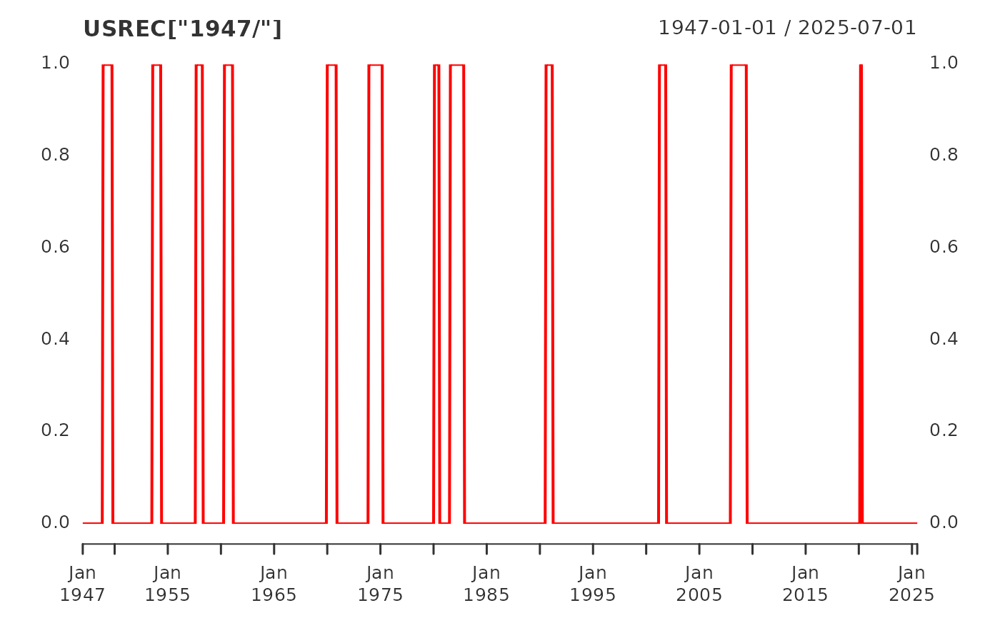

USREC NBER based Recession Indicators for the United States from the
Period following the Peak through the Trough
data(USREC)
An xts object containing monthly observations of NBER
based Recession Indicators
Release: Recession Indicators Series (Not a Press Release)
Seasonal Adjustment: Not Seasonally Adjusted
Frequency: Monthly
Units: +1 or 0
Date Range: 1854-12-01 to 2021-04-01
Last Updated 2021-05-03 6:01 PM CDT
Federal Reserve Bank of St. Louis https://fred.stlouisfed.org/data/USREC.txt
This time series is an interpretation of US Business Cycle Expansions and Contractions data provided by The National Bureau of Economic Research (NBER) at http://www.nber.org/cycles/cyclesmain.html. Our time series is composed of dummy variables that represent periods of expansion and recession. The NBER identifies months and quarters of turning points without designating a date within the period that turning points occurred. The dummy variable adopts an arbitrary convention that the turning point occurred at a specific date within the period. The arbitrary convention does not reflect any judgment on this issue by the NBER's Business Cycle Dating Committee. A value of 1 is a recessionary period, while a value of 0 is an expansionary period. For this time series, the recession begins the first day of the period following a peak and ends on the last day of the period of the trough. For more options on recession shading, see the notes and links below.
The recession shading data that we provide initially comes from the source as a list of dates that are either an economic peak or trough. We interpret dates into recession shading data using one of three arbitrary methods. All of our recession shading data is available using all three interpretations. The period between a peak and trough is always shaded as a recession. The peak and trough are collectively extrema. Depending on the application, the extrema, both individually and collectively, may be included in the recession period in whole or in part. In situations where a portion of a period is included in the recession, the whole period is deemed to be included in the recession period.
The first interpretation, known as the midpoint method, is to show a recession from the midpoint of the peak through the midpoint of the trough for monthly and quarterly data. For daily data, the recession begins on the 15th of the month of the peak and ends on the 15th of the month of the trough. Daily data is a disaggregation of monthly data. For monthly and quarterly data, the entire peak and trough periods are included in the recession shading. This method shows the maximum number of periods as a recession for monthly and quarterly data. The Federal Reserve Bank of St. Louis uses this method in its own publications. A version of this time series represented using the midpoint method can be found at: https://fred.stlouisfed.org/series/USRECM
The second interpretation, known as the trough method, is to show a recession from the period following the peak through the trough (i.e. the peak is not included in the recession shading, but the trough is). For daily data, the recession begins on the first day of the first month following the peak and ends on the last day of the month of the trough. Daily data is a disaggregation of monthly data. The trough method is used when displaying data on FRED graphs. The trough method is used for this series.
The third interpretation, known as the peak method, is to show a recession from the period of the peak to the trough (i.e. the peak is included in the recession shading, but the trough is not). For daily data, the recession begins on the first day of the month of the peak and ends on the last day of the month preceding the trough. Daily data is a disaggregation of monthly data. A version of this time series represented using the peak method can be found at: https://fred.stlouisfed.org/series/USRECP
#> USREC #> Jan 2007 0 #> Feb 2007 0 #> Mar 2007 0 #> Apr 2007 0 #> May 2007 0 #> Jun 2007 0 #> Jul 2007 0 #> Aug 2007 0 #> Sep 2007 0 #> Oct 2007 0 #> Nov 2007 0 #> Dec 2007 0 #> Jan 2008 1 #> Feb 2008 1 #> Mar 2008 1 #> Apr 2008 1 #> May 2008 1 #> Jun 2008 1 #> Jul 2008 1 #> Aug 2008 1 #> Sep 2008 1 #> Oct 2008 1 #> Nov 2008 1 #> Dec 2008 1 #> Jan 2009 1 #> Feb 2009 1 #> Mar 2009 1 #> Apr 2009 1 #> May 2009 1 #> Jun 2009 1 #> Jul 2009 0 #> Aug 2009 0 #> Sep 2009 0 #> Oct 2009 0 #> Nov 2009 0 #> Dec 2009 0